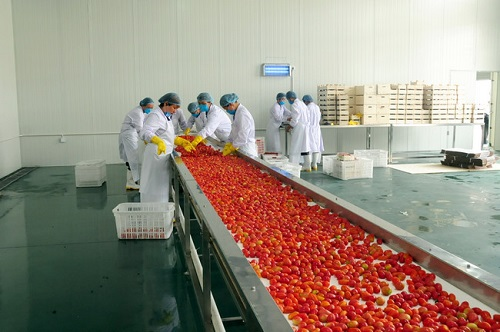
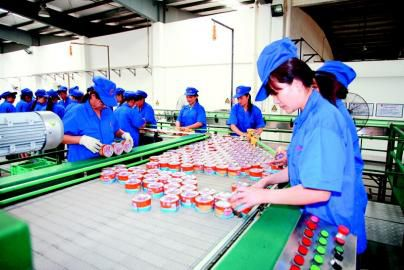
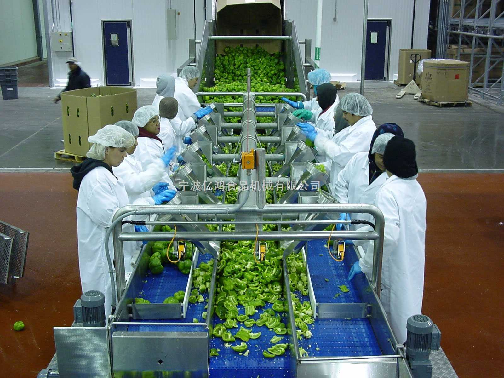
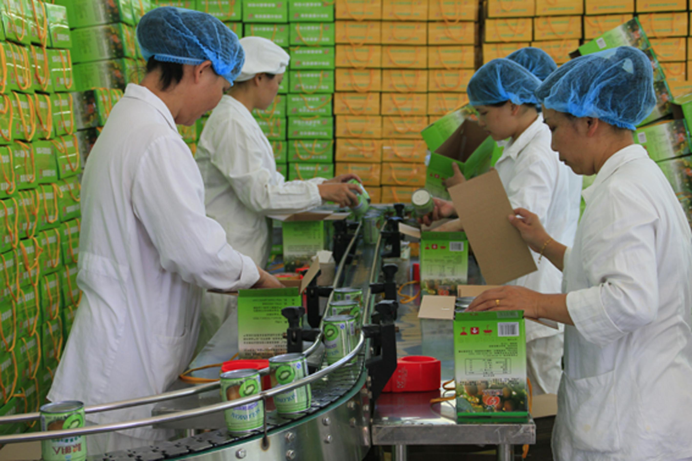
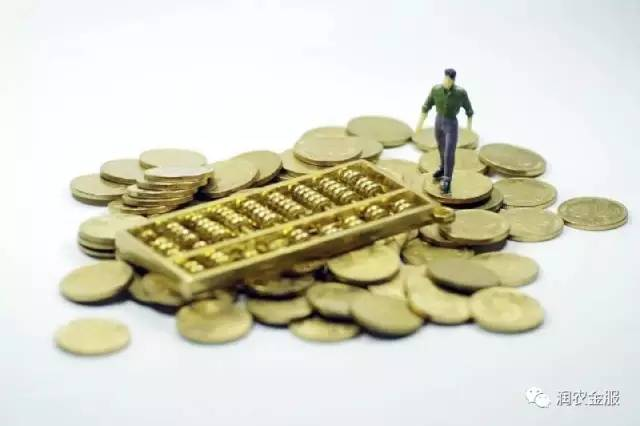

农产品加工业政策红利多多！
国务院办公厅印发的《关于进一步促进农产品加工业发展的意见》，对农产品加工业给予了重大支持。那么，这个政策对农企、合作社、家庭农场、种养大户以及返乡创业人员等都有哪些重大利好？
发展农产品加工业的好处
农产品加工业是指对粮棉油薯、肉禽蛋奶、果蔬茶菌、水产品、林产品和特色农产品等进行工业生产活动的总和。它一头连着农业和农民，一头又连着工业和市民，是农业现代化的支撑力量和国民经济的重要产业。
发展农产品加工业主要有这么几个好处
一是提高农业综合效益。把生产出来的农产品直接拿到市场上去卖，效益比较低，但如果经过加工，就能产生附加值，大幅度提升产品的效益。
二是能使经营主体及农民增收。增收一直是国家政策的重点，要实现增收不能单靠给钱，而是要扶产业，要自强。那么发展加工业，一方面使经营主体的利润增加达到增收目的，另一方面也使农民直接收入增加，还可获得出售农产品的间接收入，同时可带动农户原料种植养殖户增收致富。
三是能促进农村产业融合。现在国家提得最多、扶持力度最大的项目就是产业融合项目。加工业延伸了原有农业产业链，推进农村产业与产业边界处交叉融合出更多的产业来，比如农业与旅游融合催生休闲农业、与信息产业融合催生的农村电子商务都是这么来的。
四是促进城镇化的发展。很多人认为城镇化只不过是个概念，和我们农产品经营者及农民相距很远。实则不然，城镇化是关系每个农村农业人的。城镇化并不是说离开农村不管农业了，而是要建立产业集群，把资源要素、就业岗位和附加价值留在农村、留给农民，为农村吸引人口聚集和公共设施建设。而加工业的发展能有效促进这个趋势。
发展重点
国家鼓励发展不改变农产品内在品质的初加工，鼓励发展二次以上加工的精深加工，同时鼓励发展主食加工和综合利用加工。
扶持政策
1.财政支持上，要求有关支农资金支持农产品加工业项目，支持农产品加工业公共设施建设等；
2.产地初加工，专项资金扶持农户和合作社建设贮藏窖、冷藏库和烘干房；
3.农业综合开发资金，以财政补贴和贷款贴息的方式支持合作组织和涉农企业发展建设农产品生产基地；
4.国家扶贫开发资金扶持项目，对贫困地区带动增收效果明显的农产品加工企业给予支持；
5.国家现代农业发展资金项目，把支持农产品加工、推动建立一批集优势产业生产和加工于一体的产业体系作为一项重要内容；
6.税收政策上，扩大农产品增值税进项税额核定扣除试点行业范围，调整完善和明确初加工优惠范围。
金融方面也有重大支持
金融扶持方面，增加支持农产品加工业信贷资金，金融机构增加支持农产品生产、加工和流通的信贷资金；在农村基层网点开设涉农贷款专柜，建立贷款审批绿色通道；保险方面，实施农业保险保费补贴。
您如果有好的项目也可以找润农金服来帮忙。润农金服为您提供资金需求，手续简单，合作模式互惠互利！